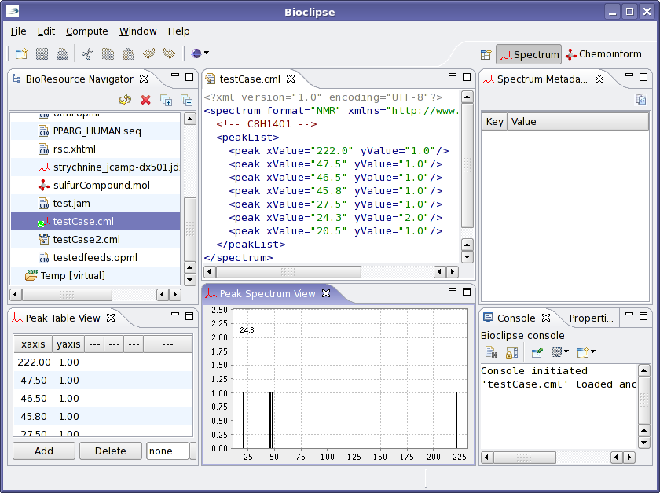
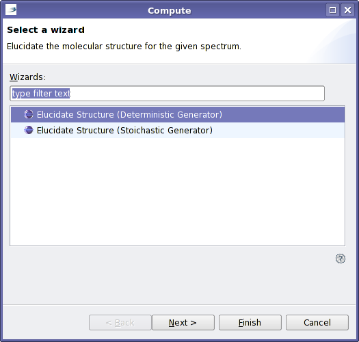
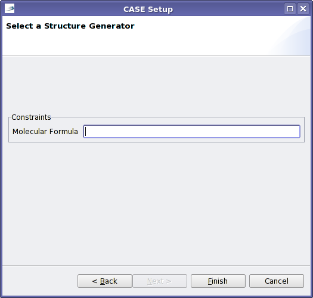

Computer-Aided Structure Elucidation is a method to find the constitutional structure of a molecule, starting from the bruto formula and NMR or MS spectra.
CASE with SENECA starts with a CMLSpec file, for example this spectrum for a compound with the molecular formula C8H14O1:
<?xml version="1.0" encoding="UTF-8"?>
<spectrum format="NMR" xmlns="http://www.xml-cml.org/schema">
<!-- C8H14O1 -->
<peakList>
<peak xValue="222.0" yValue="1.0"/>
<peak xValue="47.5" yValue="1.0"/>
<peak xValue="46.5" yValue="1.0"/>
<peak xValue="45.8" yValue="1.0"/>
<peak xValue="27.5" yValue="1.0"/>
<peak xValue="24.3" yValue="2.0"/>
<peak xValue="20.5" yValue="1.0"/>
</peakList>
</spectrum>
SENECA is able to run with two different structure generators; the first is the deterministic structure generator, which creates all possible constitutional isomers for the given molecular formula.
CASE is started by opening the CMLSpec file, and clicking the blue 'compute'
button in the menu bar, and selecting 'Other' with the black arrow right of it:

The opened dialog allows you to select one of the two structure generators:

When you select the deterministic generator, the wizard will ask you the
molecular formula. It is important right now that you gave the atom count for
each element, so C8H14O1 instead of C8H14O:
